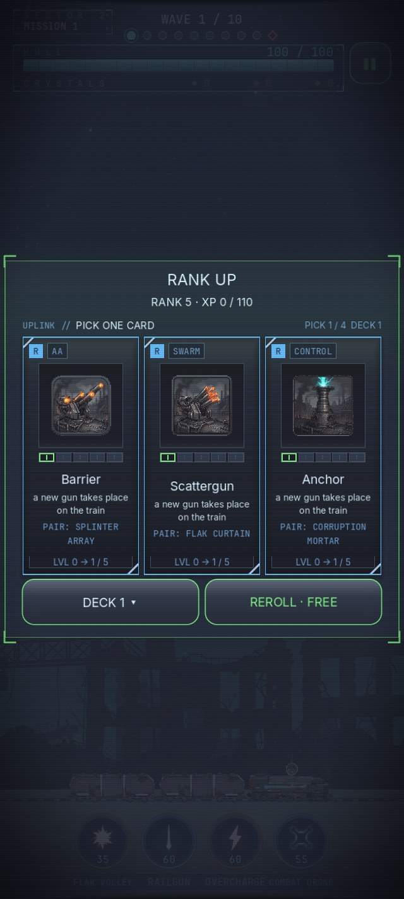

Пресс-кит
Факты
- Название: «Поезд Последней Войны» (EN: The Last War: Train Defense)
- Разработчик: Dido Games
- Производство: игра целиком сделана искусственным интеллектом — код, арт, звук, баланс, тексты и локализация
- Роль человека: постановка задач, дизайн-решения, приёмка, тестирование на устройстве и публикация
- Платформы: Android (Google Play) и iOS (App Store)
- Статус: вышла в обоих магазинах: Google Play (Android 7.0 и новее) и App Store (iOS 17.0 и новее); бесплатно
- Как попробовать: установить из магазина: Google Play или App Store
- Жанр: аркадное ПВО-выживание (AA-survival) с карточным драфтом, дизельпанк
- Забег: одна миссия: десять волн, последняя — босс; ориентир 5-7 минут
- Модель: free-to-play — необязательные покупки и реклама за награду
- Движок: Godot 4.6
- Ориентация: портрет, играется одной рукой; кампания играется офлайн
- Языки: 10 языков, включая русский и английский
- Сайт: didogames.net
- Пресс-контакт: support@didogames.net
Описание
Коротко: игра про ИИ, сделанная ИИ. Бронепоезд держит рубеж, машины пикируют с неба. Турели стреляют сами — ваши руки заняты сбором кристаллов, способностями реактора и выбором карт: каждый ранг предлагает три, взять можно одну.
«Поезд Последней Войны» — аркадное ПВО-выживание в дизельпанк-сеттинге. Состав стоит на рубеже, мир прокручивается мимо, враги пикируют сверху. Прицеливаться не нужно: зенитки ведут огонь автоматически. Игрок управляет полем сбора — падающие кристаллы надо поймать до земли, они заряжают реактор.
Прокачка внутри боя — карточная. Забег равен одной миссии (около двух минут), за сбитые машины растёт ранг, каждый ранг замирает бой и выкладывает три карты — выбор обязателен. Карты — это лестницы орудий: девять стволов, у каждого пять ступеней (монтаж, лицо, путь, рост пути, предел). Монтаж ставит ствол на состав, а третья ступень — развилка: ствол выбирает одно из трёх направлений своей стихии, два других закрываются до конца миссии. Плюс четыре связки, которые загораются сами, когда на составе встречаются два напарника.
Дерево узлов осталось, но живёт вне боя: собранные в рейсе кристаллы тратятся на него между забегами. Маршрут — десять биомов со своими врагами, погодой и осью давления, каждая миссия кончается боссом волны, каждый биом — большим боссом. В депо собирается состав: локомотив, вагоны со способностями реактора, модули и трофейные ядра. Орудия в депо не ставятся — они приходят картами в бою. Забеги бесплатные, без энергии и таймеров.
Ключевые особенности
- Зенитный рубеж: турели стреляют сами — игрок отвечает за сбор, способности и выбор карт
- Поле сбора: кристаллы нужно поймать до земли, они заряжают реактор
- Карточный драфт в бою: ранг за сбитых, на каждом ранге бой замирает и выкладывает три карты
- Лестницы орудий: 9 стволов, у каждого 5 ступеней — монтаж, лицо, путь, рост пути, предел
- 27 путей: на третьей ступени ствол выбирает одно из трёх направлений своей стихии, два других закрываются до конца миссии
- Пересдача карт: одна бесплатная за забег, дальше — за просмотр ролика, лимит виден на кнопке
- 4 связки: напарник напечатан на карте заранее, связка загорается сама и растёт от уровней обоих стволов
- Забег = одна миссия: десять волн, последняя — босс
- Дерево узлов — вне боя: кристаллы рейса тратятся между забегами, в бою дерево недоступно
- 10 биомов со своими врагами, боссами и погодными механиками
- Боссы миссий и боссы биомов
- Депо: локомотив, вагоны со способностями реактора, модули и трофейные ядра
- Забеги бесплатные: без энергии, без таймеров ожидания
- Портретный режим, управление одним пальцем; кампания играется офлайн
- Производство: код, графика, звук, баланс и локализация на 10 языков сделаны ИИ
Медиа
Презентационный ролик (70 с, со звуком): P1_presentation.mp4 — реальная запись из игры, смотреть можно и на странице игры.
Скриншоты и логотип можно свободно использовать в статьях, обзорах и видео об игре. Клик по картинке — полный размер. Нужны другие материалы — напишите: support@didogames.net.

{kind=link}



Как сделана игра
«Поезд Последней Войны» — игра про искусственный интеллект, сделанная искусственным интеллектом. Конкретно:
- Код. GDScript под Godot 4.6: боевой цикл, экономика, система сохранений, магазин, интерфейс. Все коммиты репозитория сделаны ИИ-агентами.
- Арт. Диффузионные модели (Leonardo.ai и локальный ComfyUI на одной RTX 4090): фоны биомов, враги, боссы, ключевой арт, иконки интерфейса. Отделение фона — ML-сегментация, не хромакей.
- Звук. Stable Audio Open — эффекты и два музыкальных трека, сгенерированы локально. Часть коротких UI-тиков осталась процедурной: модель плохо держит транзиенты короче 0.3 с.
- Баланс. Кривые волн, экономика, лестницы орудий и дерево узлов настроены прогонами симулятора, а не на глаз: каждое решение по числам — десятки прогонов миссии.
- Тексты. Сюжет, бортжурнал, строки интерфейса и локализация на 10 языков.
Что ИИ не делал. Движок Godot, шрифты и сторонние SDK (реклама, аналитика, платежи) — обычные внешние компоненты. Промо-ролик — не сгенерированное видео, а настоящая запись из движка: AI-видео пробовали и отвергли, оно не совпадало со стилем игры. Человек ставит задачу, принимает работу и проверяет билд на устройстве.
О разработчике
Dido Games — независимый разработчик. Движок — Godot 4.6, платформы — Android (Google Play) и iOS (App Store).
Контакты
Почта: support@didogames.net
Сайт: didogames.net